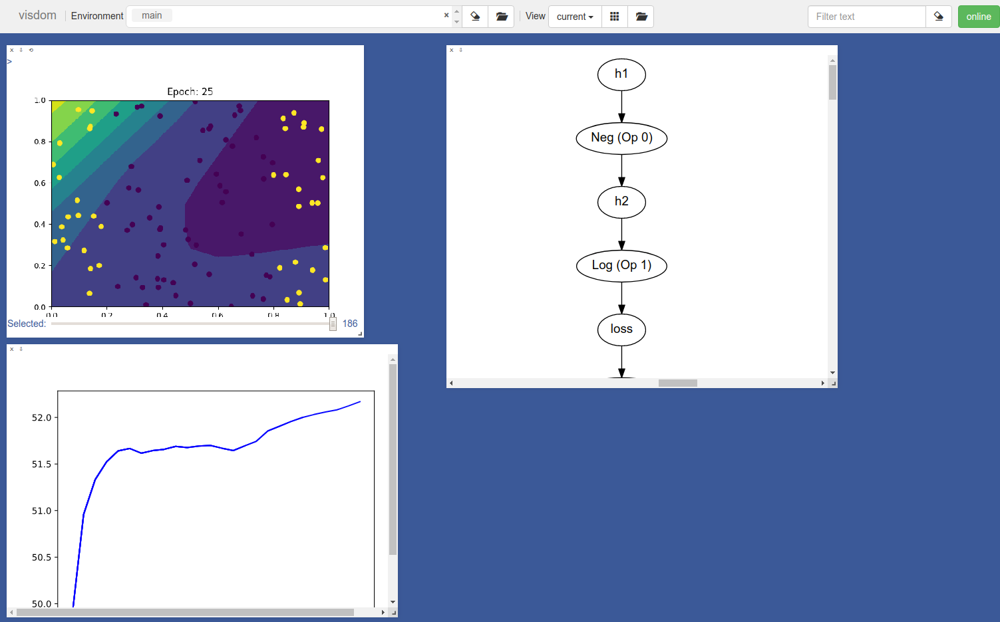

Visualization¶
While testing is nice for maintaining correctness, exploratory analysis is also critical for gaining intuition. When you are stuck, often the best thing to do is to just look at your data and outputs. Visualizing our system can't prove that it is correct, but it can often directly help us to figure out what goes wrong. Throughout our development, we will use visualization to observe intermediate states, training progress, outputs, and even final models.
The main library we will use is Visdom (https://github.com/facebookresearch/visdom). Here is an example of what it looks like:
You can think of it as sending images and graphs from your code to a centralized, organized place. Nothing that magical, we could just output them to a directory, but we will see this has some nice benefits.
To start Visdom, you need to run the following command in your virtual env (it also works in online environment like Repl.it):
>>> visdom 2> error.log &
Next, open up a browser window and, go to http://localhost:8097 (or whichever port it starts on).
You can plot functions that go directly to this board. For instance, you can plot a simple graph with the following code:
import visdom
import matplotlib.pyplot as plt
vis = visdom.Visdom()
# Loss goes down!
plt.plot([2.0, 1.0, 0.0], c="blue")
plt.title("Model Loss")
# Send to visdom
vis.matplot(plt, win="loss")
There is a lot more you can do with Visdom. Check out Visdom for a list of goodies.
To kill a Visdom server running in the background, you can first check what jobs are running and choose the job (e.g. job 1) that you want to kill:
>>> jobs
>>> kill %1
You can kill all Visdom servers by running:
>>> killall visdom